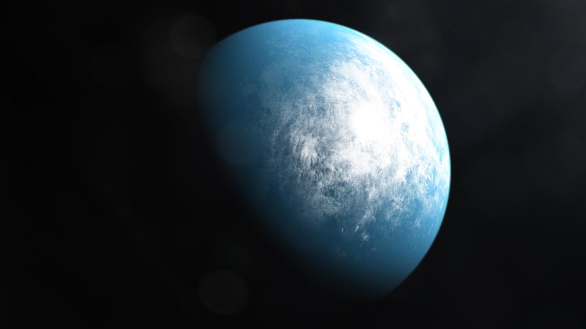

Cepheus
Ekosky
Empowering students to explore the cosmos

Empowering students to explore the cosmos
Thousands of years ago, our ancestors gazed at the night sky and studied the stars. They mapped their positions and created drawings that formed constellations. How are constellations perceived outside our galaxy, the Milky Way?
The constellations we see are based on Earth's perspective. Scientists can accurately determine the location of astronomical objects by using concepts like right ascension (RA), declination (Dec), and parallax as coordinates. Now, imagine traveling to an exoplanet! How would the positions of the stars appear differently from that vantage point? Let’s explore some intriguing exoplanets: TOI-700d, Ross 128, and TRAPPIST-1e!
Join us on an exciting journey through the universe with our app, where students can pick their favorite exoplanet and explore a dazzling interactive star chart! Imagine creating and naming your very own constellations as you discover the wonders of distant worlds beyond our solar system. With options to export stunning images of your starry masterpieces and fun educational tidbits about exoplanets and constellations, learning about space has never been more thrilling!
Our mission is to inspire curiosity and facilitate learning through engaging tools that empower students to explore the cosmos.